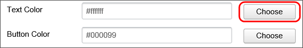
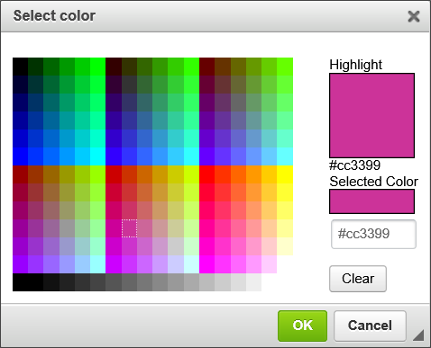
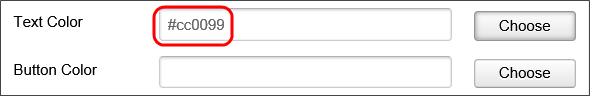

The first toolbar is the Basic Controls toolbar. The Basic Controls toolbar contains the following seven tools:
These seven controls are the widely-used controls on a Form template. Detailed information about these controls is available in the Basic Controls documentation.
The second controls toolbar consists of a series of dropdown menus. Each dropdown menu groups a specific category of controls into a set of tools that insert the controls onto the template. The Additional Controls fall into the following categories:
Detailed information about the individual Dropdown menus, and the controls they contain, are available in the Additional Controls topic.
Several of the controls in the Online Form Designer have color properties for setting text colors, background colors, etc. A color picker is provided to enable you to configure these color properties.

If you know the hexadecimal HTML color, you can type it directly into the property box, but in most cases, you will click the Choose button to invoke the color picker.

As you move your mouse over the colored tiles. the Highlight box will display the color over which your mouse is currently hovering. When you click on a colored tile, the Selected Color box will display the color you select, while the text box below the Selected Color box will display the Hexadecimal HTML color you have selected. Once you have selected a color, you can save the color and close the dialog box by clicking the OK button. When the dialog box closes, the color you have selected will appear in the appropriate color property.

In addition to the predefined controls that are presented in the Online Form Designer, you can use any of the controls that are specified in the Form Control Tags topic, and add those control tags to the Form. Those tags will be converted to the actual controls when they are presented to the user at run-time.